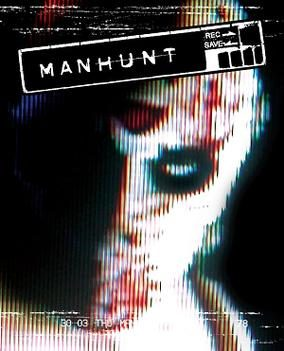

Manhunt (PC)



(Rockstar)
What could be more enjoyable than having the rules and constraints of society lifted for a brief period of time, and being allowed to indulge in a little good ol’ fashioned blood lust? Catching it all on videotape perhaps. Responsible for igniting righteous fury and controversy with the massively successful Grand Theft Auto series, developers Rockstar have for the moment shifted the focus of their attention to an even more controversial topic: snuff films. Manhunt represents a fresh take on the popular stealth genre, and the violence is more brutal, tasteless and in your face than ever before. Rockstar have refused with Manhunt to pander to the notion that videogames are for kids, and the results are exhilarating.
While the subject matter is nothing if not provocative, Rockstar have been more than happy to promote the less than tasteful elements of Manhunt. The game is even packaged to look like an illicit videotape, a visual filter applied to the gameplay to give it the appearance of a old grainy VHS. In terms of basic concept, Manhunt is not too dissimilar to the old Arnold Schwarzenegger flick The Running Man: set in a violently decayed urban future where snuff has become a popular form of escapism, disgraced Hollywood filmmaker Lionel Starkweather (voiced by the wonderfully sinister Brian Cox) now makes his living directing such tasteful adult entertainment. Striking a deal with someone up high, Starkweather rescues hardened criminal Johnny Earl Cash from death row with the intention of making him a star. A snuff star that is. Offered the promise of freedom if he makes it through the night alive, Cash is thrown into the streets where he must survive the deadly scenarios devised by the director, and violently dispatch the sadistic gang members hired to hunt him down. And every step of the way, hidden cameras are filming the proceeds for Starkweather’s next major epic.
With the incarnation of Manhunt on PS2 already receiving plenty of flack for its violent subject matter, no mistake can be made - this is adult entertainment with a capital A. While primarily a stealth game, as mentioned this is Rockstar’s own deliciously twisted take on the genre. Outnumbered and vulnerable at all times you are required to hide in the shadows to survive, your only saving grace the ability to sneak up behind the lurking gang members and execute them. And the longer you remain undetected before executing the kill, the more violently depraved the death scene. As the kill is performed, your viewpoint switches to one of the grainy, interlaced surveillance cameras that are recording your progress. You get to watch in full cinematic glory as Cash invicerates a hoodlum with a shard of glass, mercilessly stabbing him in the head before throwing his lifeless body to the ground. You’ll wince as he strangles a thug with a baseball bat, before needlessly and gratuitously smashing his head clean off his shoulders. And you’ll cringe as he delivers an axe to the face or disembowels his victim with a sickle, blood splattering all over the camera. The list goes on, the executions only becoming more violently depraved as additional weapons are made available to you.
In touch with his subject at all times via an ear piece, Starkweather is convinced that you have the makings of a major snuff star. “This is some of the best snuff I’ve seen,” he tells you with wicked glee. Each and every death that you’re responsible for is hideously glorified, the violence is as brutal as any slasher film you’ve ever watched. More than once you’ll be struck by the moral dilemma of what you’re doing, caused to cringe as each successive death became even more horrendously intense. But to kill is the only way to survive, and not unlike Johnny Earl Cash himself, you’re totally powerless to do anything but to play through whatever fiendish scenario The Director has cooked up for you. For an occasional change of tone, The Director throws a firearm your way for an interlude of all out third-person action. While these sections become frustratingly tough, the tactical nature of the combat and the ability to take cover behind objects gives these intense shoot-outs the feeling of a gritty action film.
Rather than playing a broken man in search of redemption, the protagonist Johnny Earl Cash is a man who seems to possess very few redeeming features, taking a real sadistic pleasure in his kills. You begin to suspect that he is an even more irreprehensible killer than the thugs sent out to dispatch him. “You have my respect, you utter sicko,” Starkweather exclaims following one particularly brutal kill. And the bad guys themselves hunting you down would have to be the most colourful and twisted bunch of cretins ever seen in a video game. A hockey-mask wearing mob of freaks, white supremacists and full-blown muttering loonies, the temperament of your opponents becomes increasingly warped as the game progresses. While you can throw around decapitated heads to lure them into the open, a hunter who stumbles across the dead body of one of their colleagues is just as likely to scream in frustration as to mumble something about how he doesn’t give a shit.
Literally dripping with an oppressive atmosphere, the strength of Manhunt comes from immersing the player in a threatening and violent urban environment where danger lies at every turn. With the tension laid on thick, the feeling of being hunted is effectively conveyed and you quickly learn the importance of running and hiding. Claustrophobia quickly sinks in and the results are dark and foreboding to say the least, delivering a solid succession of genuine scares. The steady sound of your heart pumping keeps the pressure on, as does the ambient and menacing soundtrack that dynamically changes in tune with what is going on around you. With the amount of violence on offer it may sound like the shocks are being used for shock’s sake: but this is not the case, as it is the stylish manner in which they are delivered that makes the game exciting. The best example of the wicked sense of glee evident in the game’s design is your excursion into an insane asylum. Run amok with crazed psychopaths raving about how there are “Too many voices!” the experience is injected with such unbridled insanity that you’ve no choice other than to grit your teeth and just continue playing. “You’ve certainly cured this little collection of neurotics for good,” Starkweather cackles with glee as you carry out yet another execution.
Compared to the high-tech gadgetry of Splinter Cell, the stealth mechanics in Manhunt may appear to be a little simplistic. Rather than the focus being on tricky and clever ways to avoid your opponents, it centres instead upon dispatching them in the most violent and depraved ways imaginable. While this is fine for the more sick and twisted among us (including yours truly), stealth veterans may find the game’s appeal to be somewhat limited. The artificial intelligence isn’t anything to write home about, as a hunter can be standing directly in front of you and fail to notice you as long as you’re in the shadows. While they’re always imbued with a perverse personality, this ineptitude ultimately detracts from the game’s scariness because they’re less of a threat. But criticisms aside, the game’s core mechanics are slick and implemented effectively. Every gritty urban location is a fiendishly constructed challenge, and shows that Rockstar are well versed in the process of game creation from their experience with the Grand Theft Auto games.
One of the darkest, most unsettling games you’ll ever lay eyes upon, those with a fondness for heavily stylised violence will find a lot to enjoy in Manhunt. A stealth game for those who may not normally play stealth games, the hardcore violence will draw in those who normally lack the patience to stay hidden in the shadows. The solid mechanics are complimented by a large collection of detailed urban environments, a sophisticated physics system and the spectacular animation of the game’s protagonist, and it all comes together into a pretty tight little package. And for the adults among us who like their entertainment dark, sinister and edgy, Manhunt features some real meaty subject matter to sink your teeth into. More than any other example of interactive entertainment that came before, Rockstar have thrown back the shackles with Manhunt and gone straight for the adult market. And best of all, in bringing this stylish and cinematic flair to the world of video games, they’ve refused to apologise
4 out of 5